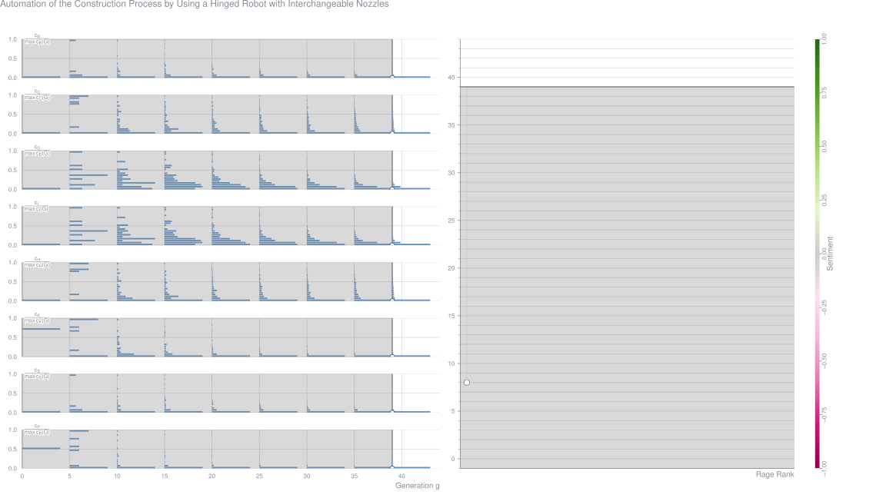
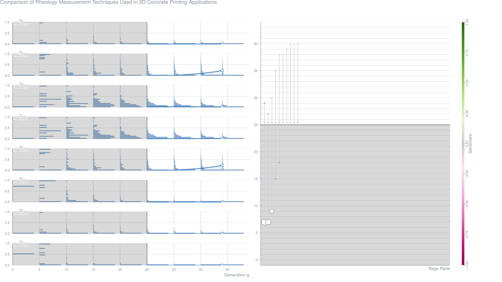
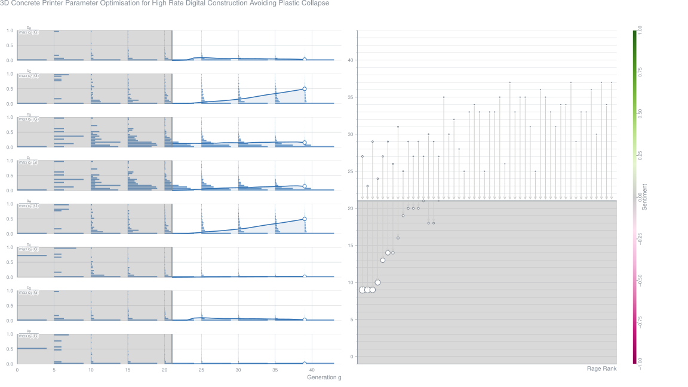
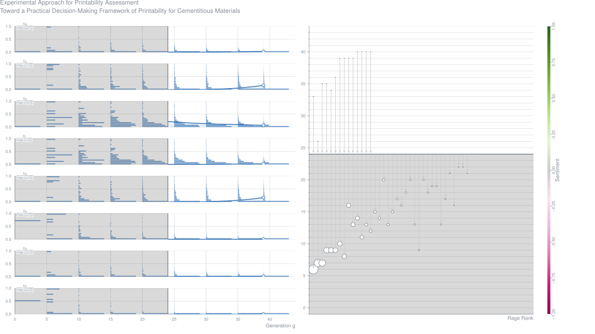
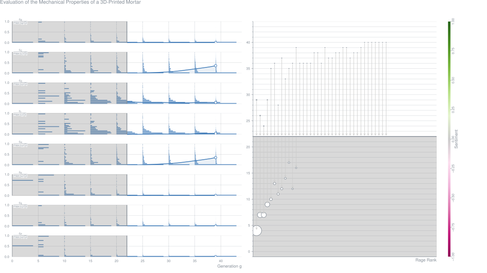
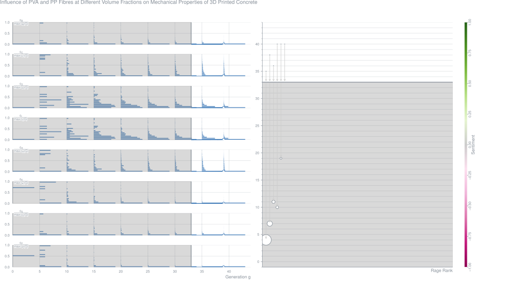
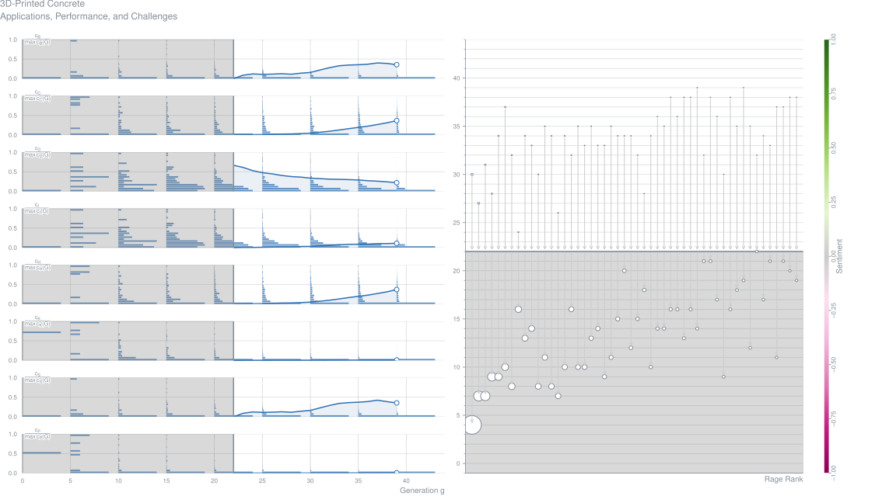
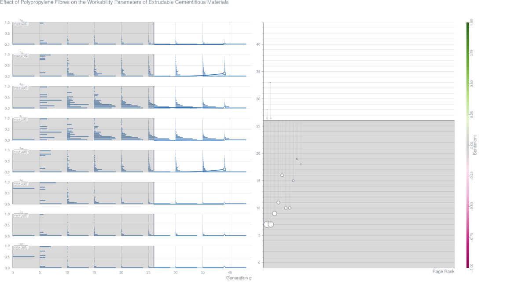
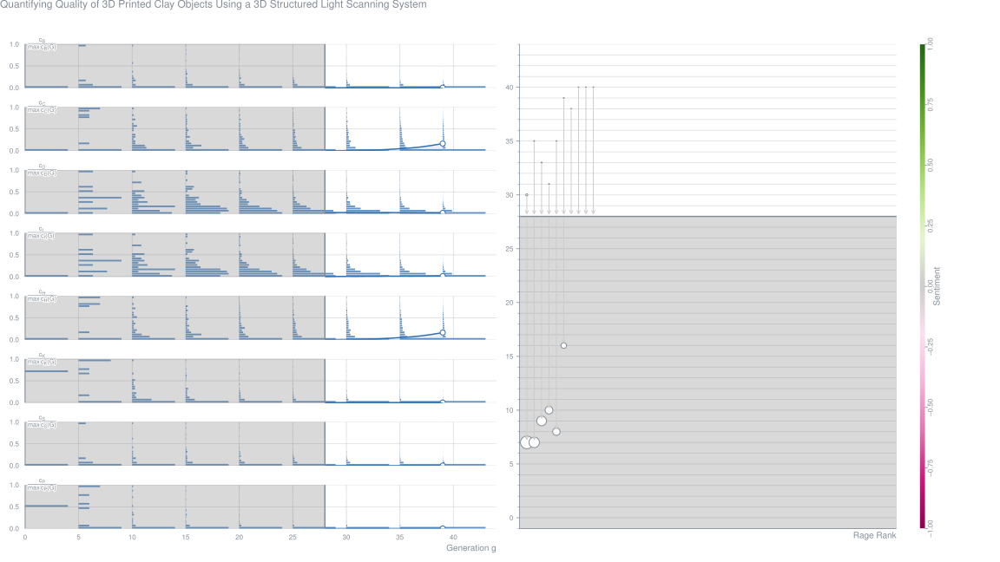

AbstractRecent years have seen a rapid growth of additive manufacturing methods for concrete construction. Potential advantages include reduced material use and cost, reduced labor, mass customization and CO2 footprint reduction. None of these methods, however, has yet been able to produce additively manufactured concrete with material properties suitable for structural applications, i.e. ductility and (flexural) tensile strength. In order to make additive manufacturing viable as a production method for structural concrete, a quality leap had to be made. In the project ‘3D Concrete Printing for Structural Applications’, 3 concepts have been explored to achieve the required structural performance: applying steel fiber reinforcement to an existing printable concrete mortar, developing a strain-hardening cementitious composite based on PVA fibers, and embedding high strength steel cable as reinforcement in the concrete filament. Whereas the former produced only an increase in flexural tensile strength, but limited post-peak resistance, the latter two provided promising strain hardening behavior, thus opening the road to a wide range of structural applications of 3D printed concrete.
Automation of the Construction Process by Using a Hinged Robot with Interchangeable Nozzles (2019-12)
Erik Grigoryan,
Anna Babanina,
Kirill Kulakov Contribution – International Scientific Conference Energy Management of Municipal Facilities and Sustainable Energy Technologies
AbstractThe article describes a method of automating the construction process by using a hinged robot in construction. Some problems such as the mobility of the 3D printing device have been solved. With increasing mobility of the device there will be increased not only the speed of construction, but also the need for high-class concrete. The main purpose of the experience is to provide a method of feed solution in the terms of use articulated robot manipulator with possibility of timely dosages in difficult conditions so that replenishment of the solution could occur on the construction site or close to it. The main idea is to use nozzles that have certain capabilities for construction. The first nozzle is a system of capturing brick blocks fed by the conveyor, and their further movement to the desired point. The other nozzle is a mobile extruder. The system is able to create a concrete thread with great precision which can be used as a masonry mortar and as a solution for printing the frame of the building.Metrics
Comparison of Rheology Measurement Techniques Used in 3D Concrete Printing Applications (2019-12)
Abstract3D Concrete Printing (3DCP) is a novel and emerging construction technique to build using digital technologies and additive manufacturing concepts. Some main advantages of 3DCP are reduced formwork wastage, the capability of constructing complex geometric shapes, higher precision, shorter construction time and increased safety. In the particular method, the structure is built layer by layer by extruding the material through a nozzle. Initially, the material should be pumped and extruded with considerable fluidity and workability. Immediately after the extrusion, the extruded layers should have enough strength and stiffness to retain the desired shape. Therefore, controlling the rheology of the material is of high importance in 3DCP. Due to the higher stiffness, and higher time and rate-dependent material behavior (thixotropic behavior) compared to the conventional concrete, conventional rheology measurement techniques have many limitations when used for 3DCPmaterial. Therefore, non-conventional (direct shear test, orifice extrusion, vane shear test), as well as conventional rheology measurement techniques (rotational rheometer and slump test), were conducted to compare the results and to characterize the rheological parameters. The rheological parameters (i.e. yield stress, viscosity, and thixotropic build rate) of concrete were measured for three different mixes. The achieved values were compared to decide the most suitable and reliable test method. The pros and cons of each test method also were discussed. The achieved yield stress values are different according to the test method used. However, a similar trend can be seen in all the testing methods. Rotational rheometer gives the lowest yield stress values, while an orifice extrusion test gives the highest yield stress values. Finally, it can be predicted that the extrusion-based testing methods such as orifice extrusion technique used in the current study give reliable results on yield stress and viscosity measurements due to the similarities between the measurement technique and the actual 3D printing extrusion process.Metrics
3D Concrete Printer Parameter Optimization for High-Rate Digital Construction Avoiding Plastic Collapse (2019-12)
AbstractThis research presents the development and application of a constructability design model, which determines the print speed and filament layer height combination that yields the fastest vertical building rate, whilst ensuring for the successful construction of an object. A 3D concrete printed structural wall element is used to validate the model. High variation in material rheological properties lead to an over prediction by the model if mean model parameter values are used. Consequently, a probabilistic design model is developed to reduce the impact of high variation in material properties on the accuracy of the deterministic design model. The first-order reliability method (FORM) is applied and material partial factors derived.Metrics
Experimental Approach for Printability-Assessment: Toward a Practical Decision-Making Framework of Printability for Cementitious Materials (2019-12)
AbstractThe objective of this paper is to propose a pre-experimental framework of printability pre-assessment of cementitious materials. This study firstly presents a general review of additive manufacturing in construction and then examines the main characteristic of the material formulation and printability properties based on extrusion technique. This framework comes with experimental tests to determine a qualitative printability index of mixtures. It uses mix-designs reported in the literature to define interval ratio of mixture design to be investigated in this study. The focus was put on two criteria that influence the formulation namely flowability and buildability. Two practiced based tests, mini slump and cone penetrometer, were used to draw the flowability and buildability dimensionless index. The results were analyzed by introducing an optimal printability coefficient and examining their time evolution. An optimal time of printing was determined Toptimal. Finally, a 3D mortar printing system and its operational process are presented. Then, based on the measurement, the optimal mixture is identified and printed in a large-scale geometry.Metrics
Evaluation of the Mechanical Properties of a 3D Printed Mortar (2019-12)
AbstractThe mechanical properties of 3D-printed mortars are determined in terms of their compressive and direct tensile bond strengths. To determine such properties using existing methods, a preliminary experiment was conducted. The compressive strength of the printed mortar was compared to mold-casted specimens and it was found that the compressive strength decreased by ~30%. Among the fabrication variables, an increase in nozzle height negatively influenced the direct tensile bond strength. For the same conditions and age, the direct tensile strength decreased by as much as 16-29% when the number of layers increased from 2 to 6. When the specimens were fabricated using a specially designed stainless steel frame and core drill, followed by extraction and the application of physical impact, the 28 days compressive strength of the specimen decreased by ~50%.Metrics
Quantitative Evaluation of Buildability in 3D Concrete Printing Based on Shear-Vane-Test (2019-12)
Keisuke Nishijo,
Motohiro Ohno,
Tetsuya Ishida Contribution – Proceedings of the 16th East Asian-Pacific Conference on Structural Engineering and Construction
AbstractWhile the slump test is widely used in conventional in situ concrete construction, no field test has yet been proposed for additive manufacturing of cementitious materials. In the extrusion-based 3D printing technology, one of the important material characteristics is buildability; when deposited fresh mortar is not stiff enough, the 3D printed object could collapse during the printing process, resulting in a limited number of buildable layers. The buildability is likely to depend on environmental conditions. Therefore, to apply the innovative 3D concrete printing technology to in situ field construction, the buildability of materials on site under varying temperature and humidity needs to be evaluated. In this research, the applicability of an evaluation method of buildability based on shear strength has been studied. The shear strength of fresh cement mortar is measured by shear vane test, which can be easily conducted on site. At an arbitrary point of the 3D printed structure, the shear stress is calculated based on the self-weight of upper layers. By comparing the strength and applied stress, potential risks of collapsing can be evaluated over the entire object and the maximum buildable height can be predicted. To verify the evaluation method, square thin-walled structures were printed by using a 3D concrete printer and the actual pintable height observed was compared with the prediction. The objects were printed with varying test parameters, including temperature conditions of 10 and 20 °C, three mix designs of cement mortar, and different sizes of 3D printers. The shear vane test was conducted under each condition during the printing process. The result showed that the evaluation method significantly underestimates the actual printable height. The discrepancy might be attributed to the significant amount of air voids in deposited filaments and to accelerated setting of fresh mortar due to moisture evaporation in the printed object.Metrics
Influence of PVA- and PP-Fibers at Different Volume Fractions on Mechanical Properties of 3D Printed Concrete (2019-12)
Luong Pham,
Xiaoshan Lin,
R. Gravina,
Jonathan Tran Contribution – Proceedings of the 16th East Asian-Pacific Conference on Structural Engineering and Construction
AbstractThis research primarily aims to investigate the effect of polyvinyl alcohol (PVA) and polypropylene (PP) fibres at different volume fractions of 0.25, 0.5, 0.75 and 1% on mechanical properties of high-performance printing concrete. For concrete without fibres, there is no noticeable discrepancy in the compressive strengths between printed and cast specimens, which are around 90 MPa. In terms of bending resistance, the flexural strength in direction Z (perpendicular to printing direction) is 46% and 15% higher than that in direction X (parallel to printing direction) and that of cast specimen, respectively. For fibre-reinforced concrete, PVA and PP fibres at different contents lead to no positive impact on both compressive and flexural strengths although specimens with PP fibres show less brittle failure in these tests. Based on the experimental investigation, reinforcing printed concrete with PVA and PP fibres with the length of 6 mm might not be recommended. X-ray micro-computed tomography (Micro-CT) measurement is performed for visualization of porosity.Metrics
Dimensional Accuracy, Flowability, Wettability, and Porosity in Inkjet 3DP for Gypsum and Cement Mortar Materials (2019-12)
AbstractInkjet (powder-based) 3D Printing is a popular and widely used technology, which can be applied to print a wide range of specimens using different powder materials. This paper discusses the use of inkjet 3DP technology for construction applications using custom-made powder instead of commercial gypsum powder (ZP 151). The paper aims to address the differences between ZP 151 and CP (a custom-made construction-specific cement mortar powder) with regard to powder flowability, wettability, powder bed porosity and apparent porosity in 3DP specimens. An inkjet 3D printer is employed and experimental results verify that ZP 151 has a lower angle of repose, a higher contact angle and noticeably less porosity in the powder bed compared with the CP powder. Additionally, specimens printed with ZP 151 have a lower apparent porosity compared with CP specimens. The wettability for each of the powders was tested using contact angle goniometer, while the Optronis Cam-Recorder was used at 1000 fps at 800 × 600 pixel resolution images for the powder flowability tests. The bulk density tester was utilised to find the apparent porosity in the printed specimens. The paper also discusses the details of the printing procedure and dimensional accuracy of printed specimens.Metrics
3D Printed Concrete: Applications, Performance, and Challenges (2019-12)
AbstractAutomatic construction systems have become the focus of the construction industry and research projects worldwide. Numerous technologies involving 3D printing (3DP) of concrete elements have been developed, and their application in construction projects has been growing. The 3DP in concrete construction is increasing due to its freedom in geometry, rapidness, formwork-less printing, low waste generation, eco-friendliness, cost-saving nature, and safety. Development of 3DP is not only limited to the earth but also gaining attention for building habitats in space. This study aims to present the technical, socio-economical, and environmental aspects related to 3DP of concrete structures for a systematic summation of the technology, guidelines, applications, challenges, and prospects of future research and market in the construction industry. This comprehensive review shows that challenges involved in 3D concrete printing should be analyzed further by researchers to enhance mechanical performance, durability, and sustainability and establish appropriate standard guidelines for printing structures.Metrics
Effect of Polypropylene-Fibers on the Workability Parameters of Extrudable Cementitious Materials (2019-12)
Thadshajini Suntharalingam,
Brabha Nagaratnam,
Keerthan Poologanathan,
Phil Hackney,
Jeffri Ramli Contribution – Proceedings of the 10th International Conference on Structural Engineering and Construction Management
AbstractAdditive manufacturing in construction industry has been introduced as an aspiration for a more sustainable built environment and currently evolving with high demand amongst researches. This study is an investigation of the influence of polypropylene (PP) fibre addition on the workability parameters of a new extrudable concrete mixture. As the quality of final printed structure prominently depends on the fresh state properties of concrete, this investigation mainly focused on the rheological properties such as workability (flow), setting time, extrudability and buildability. These parameters were systematically investigated through a small scale experimental process with time after mixing. The selected control mix with Ground granulated blast furnace slag (GGBS) and Silica Fume (SF) was used in this analysis. The Control cementitious specimens without fibre inclusion and with fibre addition in different volume fraction of binder, ranging from 0.5 to 3% were printed. The results showed that the fibre addition of 0, 0.5 and 1.0% have the better flowability and extrudability compared to 1.5, 2 and 3%. Also, reduction in the print quality was assessed visually with increasing fibre percentage. However, results indicated that the initial setting time is comparatively low for those mixes with higher fibre inclusion which is required for better bond strength between layers. Moreover, higher fibre content caused better buildability and shape retention in the extruded samples.Metrics
Quantifying Quality of 3D Printed Clay Objects Using a 3D Structured Light Scanning System (2019-12)
AbstractThree-dimensional (3D) printing, or additive manufacturing, has been increasingly used in many fields, including the medicine, food, sensing, metal, automotive, and construction industries. Regardless of its growing applications, there are few of methods, guidelines, and specifications for measuring and quantifying the qualities of 3D printed objects. This is particularly so for objects those are too small, too large, and/or too fragile to be handled manually. In this study, for the first time, a non-contact, and non-destructive measurement method, a 3D structured light scanning system (3D-SLSS), was employed for evaluating the printing qualities of clay objects with different levels of visual defects (e.g., roughness and distortion). 3D scanned images of these clay samples were developed using 3D-SLSS. Then, they were sliced along their sides (perpendicular to the base) to generate a number of two-dimensional (2D) plots, from which various parameters (e.g., sample total height [Htotal], outer diameter [DMouter], layer thickness [TL], layer width, [(WL], surface angle [Sα], semi-cross-sectional area [XA], and surface roughness [R]) were measured. These measurements were then compared with the designed values. The percentages of the differences between the measured and designed values were used to develop a diagnosed area of deficiency, by which the overall qualities of the printed samples were quantified. The results illustrated that all the printed samples exhibited certain differences between their measured and designed values, even for those that appeared well printed. Compared with the designed object, the printed samples generally had reduced total height, diameter, and layer thickness; increased layer width; measurable distortion; and visible surface roughness. Many of these were largely because the freshly printed clay deformed under the weight of the layers above. The distortion angle and area are two necessary parameters for quantifying the degree of distortion of a printed sample. The diagnosed area of deficiency can well describe the overall qualities of the printed samples. 3D-SLSS is a relatively simple, fast, and inexpensive characterization method. Moreover, it can be conveniently extended to various industries for quality control of diverse 3D printing products.Metrics
Agent-Based Modeling to Optimize Workflow of Robotic Steel and Concrete 3D Printers (2019-12)
Abdallah Abou Yassin,
Farook Hamzeh,
Fatima El Sakka Journal Article – Automation in Construction, Vol. 110